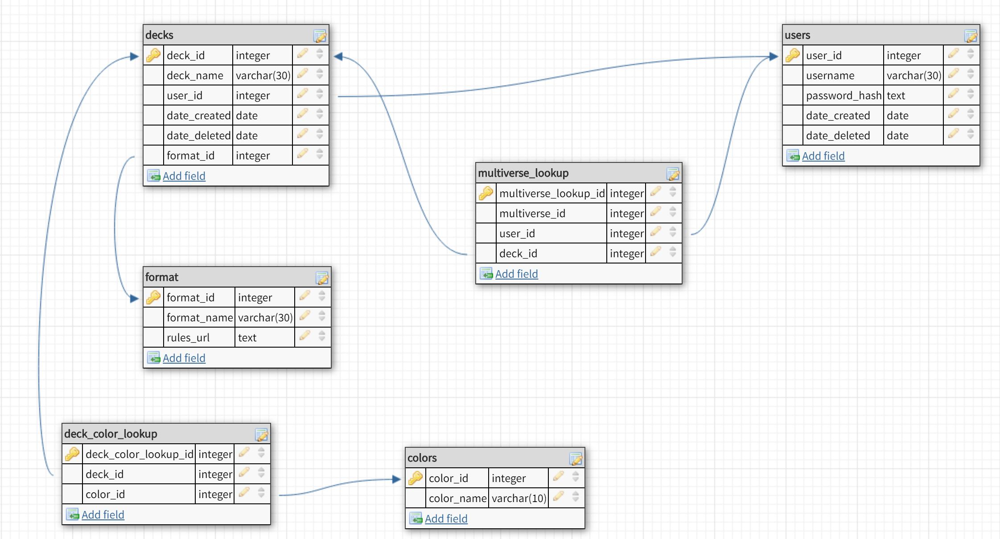

The following diagram explains the design of the database for the Magic: The Gathering website.

As shown above, the database will feature several tables with a few lookup tables. One of
the most important tables is the multiverse_lookup
table. This table will house the multiverse id for cards added by users either through
"saving" the card to their account or by adding the card to a deck. This multiverse id comes
from the API endpoints offered by Wizards of the Coast, the creators of Magic: The Gathering.
These API Endpoints are used in order to query the database housing the list of cards in
the realm of the game. The following is an example of the response JSON of
a query for the card pictured on the right. A plethora of information is returned from
the GET request, including all details given on the card as well as various versions of
the card in different languages.
In order to create the database structured above, the following sql code will be implemented.
User passwords will be hashed server-side using the
sha256 method. This method uses
several different methods of cryptography to mess with plaintext to make it extremely well hashed.
Try out the example below.